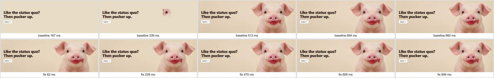
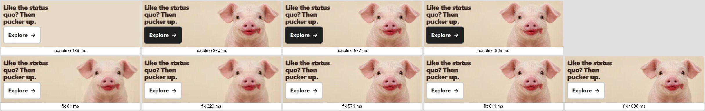
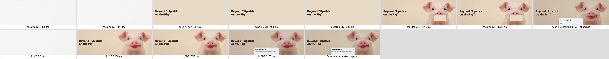
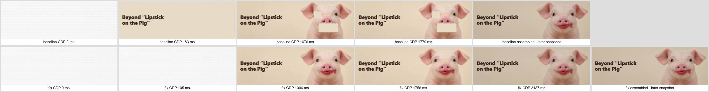
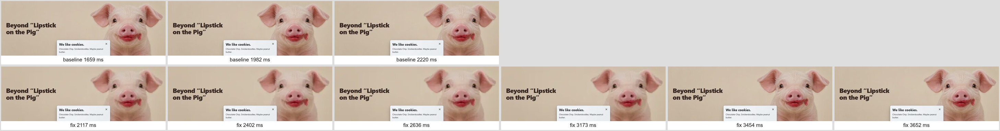
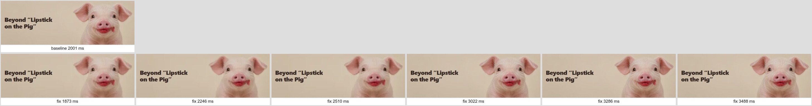
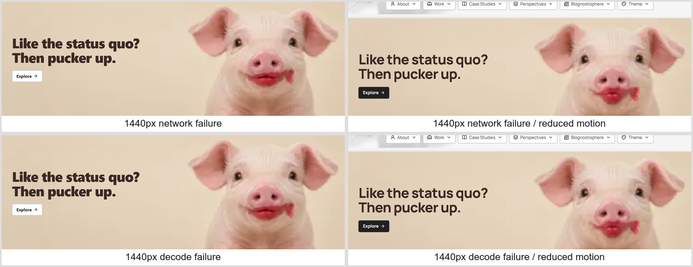
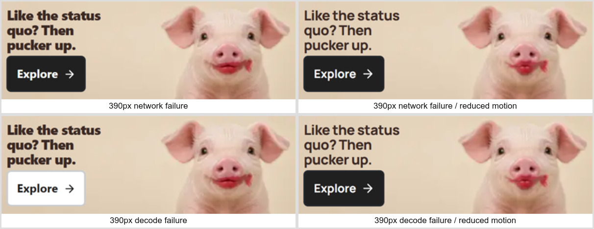

Local evidence only. Baseline is the upper row, fix the lower row. Fallback is a deliberately softer complete pig. Read methodology and limitations and all timing results. Screenshot times bracket presentation; they are not hardware scanout measurements.







